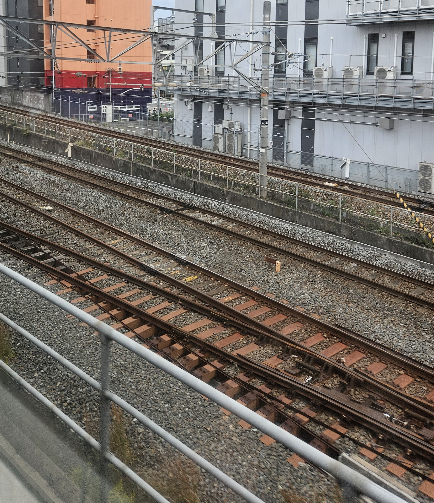

(일본 오사카순환선과 칸사이본선. 한와선을 운행하던 열차 안에서 직접 촬영)
협궤는 1435mm보다 좁은 모든 궤간을 부르는 명칭이다.
1435mm보다 좁으면 모두 협궤로 분류되기 때문에, 여기에는 다양한 종류가 있다.
600mm대의 궤간부터, 760mm의 보스니아 궤간, 950mm의 이탈리안 미터 궤간, 1000mm의 미터 궤간 등, 매우 다양하다.
위의 사진에 나온 궤간은 1067mm인데, 협궤 중에서는 상당히 흔한 궤간이다. (3피트 6인치 궤간. 통칭 '케이프 궤간')
381mm라는 극단적인 협궤도 있는데, 이것을 만든 '아서 헤이우드'는 가장 좁은 궤간에 관심을 가지고 있었다. 일종의 시험 용도로 만든 것으로 보인다. 이 궤간은 15인치 궤간으로 불리며, 현재는 주로 관광지 등에서 쓰인다.
협궤는 표준궤에 비해 건설비가 저렴하고 토지를 적게 점유한다는 장점이 있다. 또, 급커브 구간을 만드는 데에도 유리하며, 그 때문에 산악 지형이나 수요가 적은 시골에서 유용하다.
그러나 수송량이 적다는 단점이 있다. 선로가 좁으므로 열차의 폭도 필연적으로 좁아질 수밖에 없기 때문이다. 그리고 고속 주행에도 불리한데, 동일한 곡선 구간에서 표준궤가 145km/h까지 낼 수 있다면 1067mm의 협궤는 130km/h가 한계이다.
고속 주행 부분은 현대에는 개량을 통해 어느 정도 완화되긴 했다.
협궤가 널리 쓰이는 나라는 일본이 대표적이다. 이 외에도 인도네시아나 태국 등 동남아 지역이나, 남아메리카의 브라질에서도 많이 쓰이고 있으며, 사하라 이남 아프리카에서도 널리 쓰이고 있다.